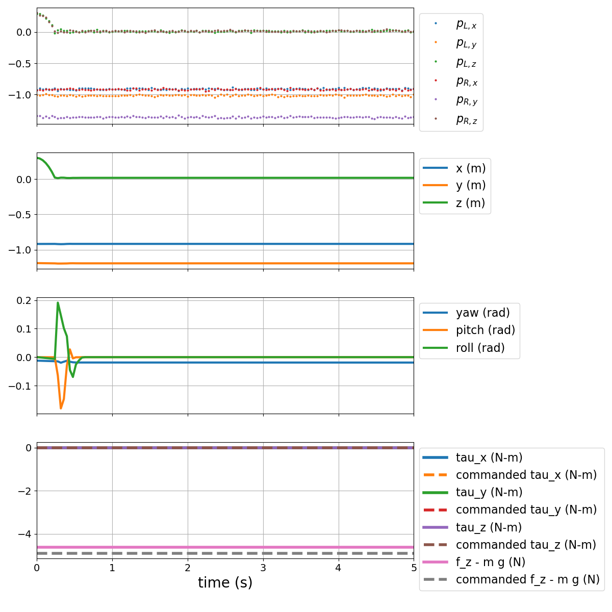
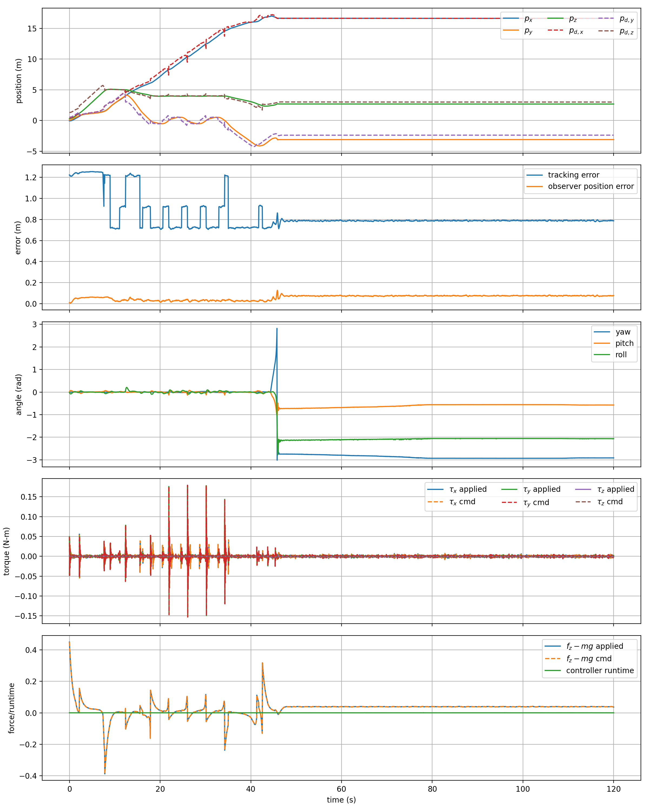
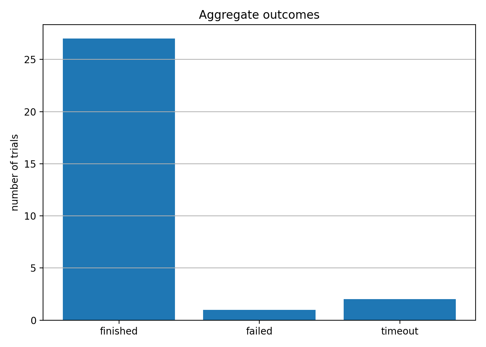
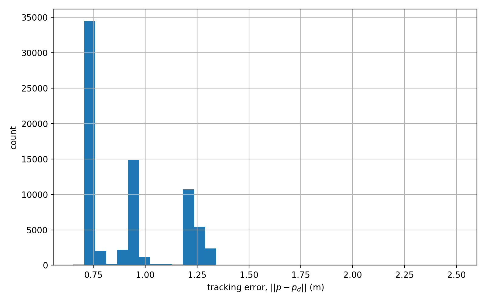
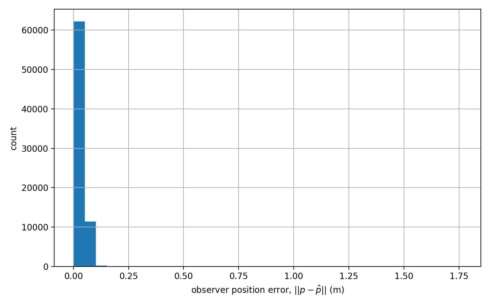
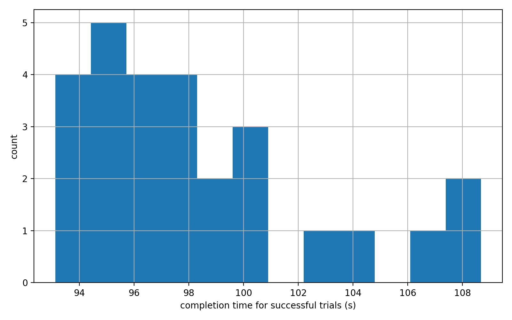
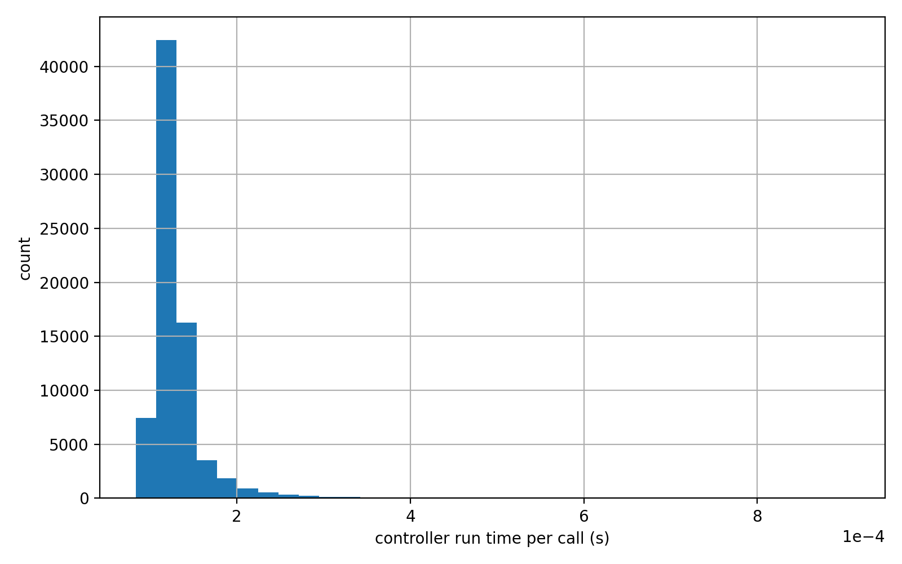
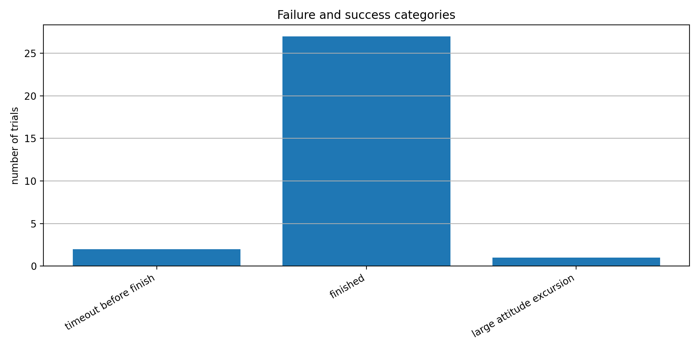

Overview
This project asked for a controller that could fly a simulated quadrotor drone through a sequence of rings without crashing, using only noisy measurements of two small markers mounted on the rotors, while also reacting to the next ring’s position and to other drones nearby. That combination made it a genuine systems problem rather than a single textbook exercise: the controller had to stabilize the drone, estimate its full state from an incomplete and noisy sensor model, track a moving target through the course, and avoid the floor, ring edges, and other traffic, all at the same time. The target was a 70% completion rate over 30 randomized simulations, a requirement chosen specifically to reward a controller that could finish reliably rather than one tuned to look good on a single lucky run.
What I did
I modeled the drone with a 12-state nonlinear model (position, yaw/pitch/roll, and their rates) and linearized it about a hover equilibrium, where all commanded torques are zero and thrust exactly balances weight. The sensor model measures only the inertial-frame positions of two markers on the left and right rotors; the average of the two markers gives position, and their relative displacement gives orientation, which is what makes state estimation possible from such a limited measurement set. Before designing anything, I checked the controllability and observability matrices of the linearized system directly: both had full rank of 12, confirming that a state-feedback controller and a state observer were mathematically achievable about hover.
For stabilization I used a continuous-time linear quadratic regulator, solving the algebraic Riccati equation for the linearized dynamics. I weighted the attitude states an order of magnitude more heavily than the translational velocity states in the cost function, since excessive pitch and roll turned out to be the dominant cause of crashes and missed rings during tuning, and I kept the thrust penalty lower than the torque penalties so the drone could still climb and descend briskly through the course. The resulting closed-loop system had every eigenvalue with a negative real part (the slowest around −0.68), confirming the design was stable about hover.
Because the controller only ever sees noisy marker positions rather than the full 12-state vector, I built a Luenberger-style observer with its gain computed by the dual LQR method, then fed the observer’s state estimate back into the controller in place of the true state. The observer error dynamics were also asymptotically stable, with the slowest eigenvalue around −0.37. As a first check on the whole loop, before testing on the full race course, I logged the marker measurements, position, attitude, and actuator commands over a short interval and confirmed the commanded and applied actuator values tracked each other closely and that the attitude states settled after an initial transient.

The LQR controller alone only stabilizes the drone around a fixed desired state, so I added a trajectory generator to move that desired state through the course. The target position combined three effects: attraction toward the next ring’s center, a lookahead point projected slightly through the ring so the drone would fly past the aperture instead of stopping at it, and repulsive corrections away from other drones, ring edges, and the floor. Close to a ring, the generator pulled in lateral error and slowed the target down to reduce edge clipping; far from a ring, it let the target move more aggressively so the drone could still finish inside the time limit. The clip below is one full autonomous run through the course using this final controller and trajectory generator.
Looking closely at one logged run shows both the strengths and the main weak point of the design. For most of the course the drone tracked the moving target closely, with tracking error concentrated in the 0.7–1.3 m band that shows up across the whole 30-trial dataset (the target is intentionally offset ahead of each ring center, so this isn’t pure ring-center error). Late in this particular run, though, a ring transition triggered a large, fast attitude excursion: yaw, pitch, and roll all moved sharply within a couple of seconds, and the logged position then went flat, which is the signature of the vehicle leaving controlled flight rather than simply running out of simulation time. This matches the “large attitude excursion” and “timeout” categories that, together, accounted for the 3 of 30 trials that didn’t finish: the controller itself stayed effective through normal flight, but an aggressive or poorly aligned approach to a later ring could occasionally push the drone into an attitude it couldn’t recover from.

To judge the controller by more than one run, I evaluated it over 30 randomized simulations and logged the outcome, tracking error, observer error, completion time, and controller runtime for every trial. The drone finished 27 of the 30 courses, a 90% success rate against the 70% requirement, with the 3 non-finishes split between timeouts and one large attitude excursion.

Tracking error stayed concentrated between about 0.7 and 1.3 m across nearly all 30 trials, and the observer’s position estimate stayed close to the true position for the large majority of samples, with occasional larger errors only during the most aggressive maneuvers.


Successful runs finished in about 93 to 109 seconds, close to the 120 s simulation limit, which reflects a controller deliberately tuned for reliability over speed: earlier, more aggressive versions cleared some rings faster but clipped edges or lost attitude control more often. Controller runtime stayed under roughly 0.2 ms per call in almost every case, well below the simulation timestep, so computation speed was never the bottleneck.



Taken together, the results traced a clear path from a linearized, provably stable design to a controller that held up under randomized, nonlinear simulation: stable in theory, reliable in practice, and limited mainly by how it handled the occasional difficult approach to a later ring.
Tools & methods
Modeled the drone dynamics, computed the hover linearization, and solved both the controller and observer Riccati equations in Python with NumPy and SciPy, then implemented the trajectory generator and ran every trial in the provided drone-racing simulator. Used Matplotlib for every logged time history, histogram, and aggregate outcome plot, and recorded a full autonomous run of the final controller as a simulation video.
Outcome
Ended up with a controller and observer pair that were provably stable in the linearized model and held up under real, nonlinear, noisy simulation: 27 of 30 randomized trials finished successfully for a 90% completion rate, well above the 70% requirement, with successful runs completing in roughly 93 to 109 seconds and a controller cheap enough to run many times faster than real time.